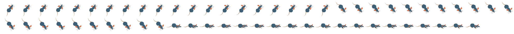

Easel
JS
提取指定帧
演示了利用
SpriteSheetUtils.extractFrame()
方法从已经加载好的精灵表数据中获取单独的一帧作为图片对象。
原始精灵表：

获取的一帧：
主要步骤 及 核心代码
步骤一: 定义变量。
var imgSeq; // 图片精灵。
步骤二: 加载图片。
imgSeq = new Image(); imgSeq.onload = handleImageLoad; imgSeq.src = "assets/testSeq.png";
步骤三: 根据图片资源创建精灵表。
var data = { images: [imgSeq], frames: {width:64,height:68}, animations: {walkUpRight:[0,19], walkDownRight:[20,40], walkRight:[41,59]} }; var spriteSheet = new createjs.SpriteSheet(data);
步骤四: 利用 createjs.SpriteSheetUtils.extractFrame 方法，从精灵表中提取一帧并保存为图片。
img = createjs.SpriteSheetUtils.extractFrame(spriteSheet, "walkRight");